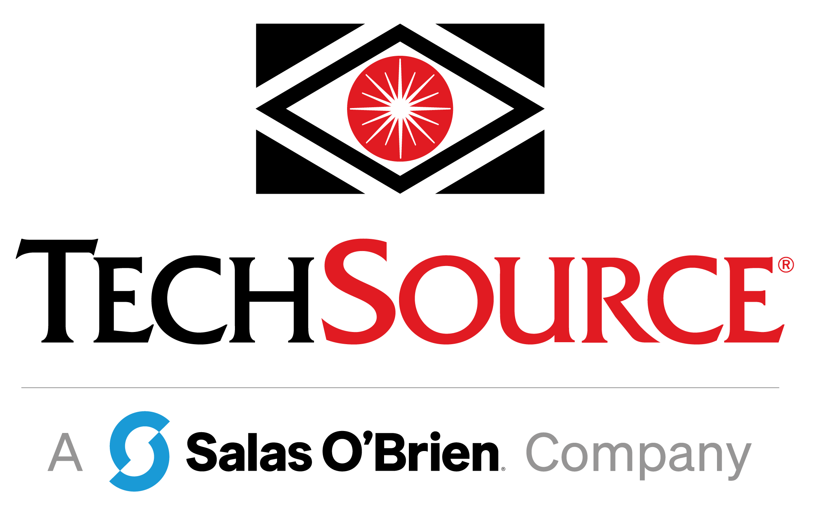
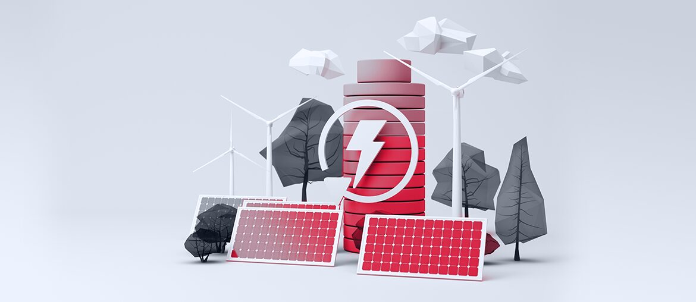

Real-time data insights for machine performance
Elinext built an industrial web platform that connects machine data with improvement insights for production teams.
Read case study
For Matthew Biasiny and the Savannah River PMO, this is a focused support plan for architecture reviews, traceability, and safe delivery work.
Saw TechSource is hiring for hands-off architecture support around safe, secure weapon-system work. That usually means the roadmap needs strong oversight before more delivery teams can move.
TechSource is not just adding developers. The open role points to architecture guidance, requirements traceability, and verification work across high-consequence systems. The bottleneck is likely review capacity, not raw coding speed. If internal cleared experts carry every decision, Savannah River work can slow while teams wait for direction. A small outside cell can prepare the unclassified work and keep decisions ready.
A dedicated Elinext squad works under TechSource's PMO, with cleared TechSource leads owning sensitive context and final approvals.
Review current architecture gates, traceability needs, and contractor handoffs without touching classified system details.
Create clear records for architecture choices, risk notes, test evidence, and PMO approval paths.
Improve non-sensitive CI, QA automation, documentation, and handoff scripts for repeatable release checks.
Run weekly demos, close gaps with TechSource leads, and leave a reusable delivery playbook.
Elinext is a full-cycle software development company, active since 1997, with about 700 in-house specialists and no freelancers. We build dedicated teams for web, backend, QA, DevOps, and AI/ML work. We hold ISO 9001 and ISO 27001, which matters when delivery needs quality and security discipline. Our named customers include Siemens, Broadcom, and Volkswagen. For TechSource, the fit is a senior squad that supports architecture work while your PMO keeps control.
Elinext built an industrial web platform that connects machine data with improvement insights for production teams.
Read case study
Elinext built a web solution that brings technical, legal, financial, and document work into one managed flow.
Read case study